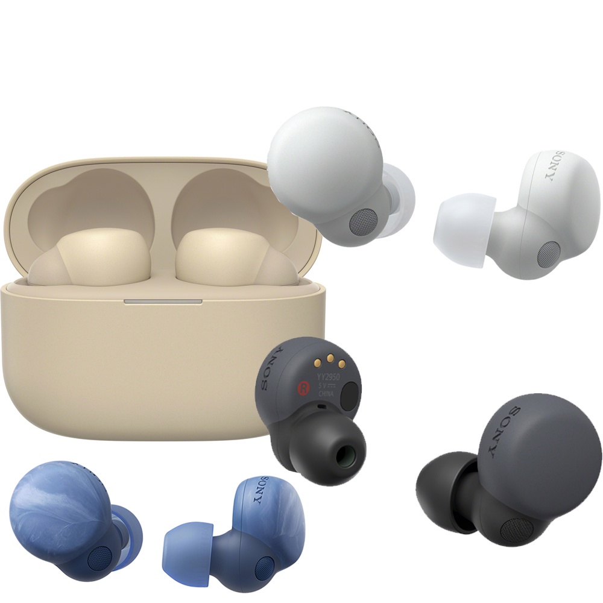

超高性價比的真無線藍牙耳機推薦，你是否已經擁有？

在這喧囂繁忙的世界，耳機不僅僅是一個音樂播放的工具，更是一扇窗戶，讓我們能逃離煩囂的外界，沉浸在自己喜愛的聲音之中。無論是通勤、學習、運動還是休閒，擁有一副好的耳機能夠顯著提升生活品質。
因此，在選擇耳機時，不僅僅是為了追求音質的完美，更是為了找到一款能夠與我們生活緊密相連，滿足多樣化聆聽需求的產品。無論你是尋找耳機的新手，還是一位老手，希望這篇文章能夠幫助你更好地了解耳機世界，找到最適合自己的聲音。
常見的專利技術與功能介紹
在選擇耳機時，理解一些專業技術術語將有助於挑選出最適合你需求的產品。以下是耳機中常見的專利技術和特殊功能：
專利技術
- ACAA™ 3.0 同軸動圈：專利的音訊技術，同軸動圈設計提升了音頻的表現，讓聲音更細膩、清晰。
- Hybrid 降噪技術：結合主動和被動降噪技術，通過多層降噪方式提供更好的環境噪聲隔絕效果。
- ANC (Active Noise Cancellation)：主動降噪技術，通過發出與環境噪音相反的聲波來消除外部噪聲，提供沉浸式的聽覺體驗。
- DSEE Extreme：一種音頻提升技術，能夠增強低品質音訊的清晰度，特別適合串流或壓縮音源的播放。
- LDAC 高解析音質：索尼的藍牙音頻技術，支援高比特率音頻傳輸，適合追求高品質音樂的用戶。
- aptX：高通的藍牙音頻編解碼技術，旨在提升音質，適合音樂愛好者。
- AAC：iOS 設備常用的音訊編碼，提供良好的音質。
- 藍牙版本：藍牙的版本（如 5.0 或 5.3）影響連接穩定性、功耗和數據傳輸速度，版本越新，技術性能越優。
- LE Audio 技術：低能耗藍牙音頻技術，提供高品質音頻並延長耳機續航時間。
- QuietSmart 2.0：混合主動降噪技術，結合多種降噪方式，適應不同環境，提供更佳的降噪效果。
特殊功能
- Transparent Mode 通透模式：讓外界聲音透過耳機，方便使用者保持對周圍環境的感知，特別適合戶外使用。
- IPX 防水等級：描述耳機的防水等級，從防汗到防水適用不同運動和生活場景。
- Hi-Res Audio：高解析度音頻標準，提供更高質量的音樂播放體驗。
- 動鐵與動圈技術：動鐵驅動器適合精確的高頻表現，而動圈驅動器則擅長強勁的低頻回應。
選購指南
那麼多的專有名詞是不是讓人眼花繚亂？別擔心，以下是針對不同使用族群的簡潔選購指南：
喜歡聽重低音的人
尋找具備低音增強器或動態驅動單體的耳機，這些耳機能夠提供更強勁、豐富的低音效果。
需要耳機用於運動的人
選擇具備防汗防水功能的耳機，例如IPX4等級以上，並考慮具備輕量化設計和耳朵固定功能，以確保運動中的舒適和穩定性。
對音質要求較高的音樂愛好者
優先選擇具備高解析音質認證或**主動降噪技術（ANC）**的耳機，這些技術能夠帶來更純粹、更清晰的音樂體驗。
需要長時間佩戴的人
選擇具備舒適耳罩、輕便設計或通風孔設計的耳機，這些耳機能夠有效減少長時間佩戴的不適感。
需要無線耳機的人
選擇藍牙 5.0 或更新版本的耳機，以確保穩定的連接和更低的功耗。同時，考慮具備長電池壽命和快速充電功能的耳機，保證長時間使用。
需要用耳機進行會議的人
選擇具有降噪麥克風的耳機，確保語音通話的清晰度。同時，具有穩定無線連接的耳機能避免通話中斷，提升會議體驗。
通過這些技術解釋和選購指南，你將更容易理解耳機的不同特性並找到最適合自己的耳機。接下來，我將為大家推薦幾款超高性價比的真無線藍牙耳機，無論你是音樂愛好者還是運動愛好者，都能找到適合自己的產品。
平價藍芽耳機推薦
- SONY WF-LS900N LinkBuds S 真無線藍牙耳機
- EarFun Air Pro 3 降噪真無線藍牙耳機
- JLab JBuds Mini 真無線藍牙耳機(挑戰史上最小耳機)
- 鐵三角 ATH-SQ1TW2 真無線耳機 真無線藍牙耳機
- Samsung Galaxy Buds2 真無線藍牙耳機
產品特色
SONY WF-LS900N LinkBuds S 真無線藍牙耳機
這款耳機特別適合音質要求較高的音樂愛好者，提供高解析的無線音樂體驗。輕巧設計，單耳僅重4.8g，長時間佩戴也舒適。主動式降噪模式和AI技術提升了通話品質。
特色：
- 自然環境音功能
- 主動式降噪模式
- LDAC及DSEE Extreme支持高解析音質
- AI技術提升通話品質
EarFun Air Pro 3 降噪真無線藍牙耳機

EarFun Air Pro 3擁有全球首款LE Audio技術，並搭載QuietSmart 2.0主動降噪。擁有長效續航與快速充電功能，確保您在各種場景中擁有優質的音樂體驗。
特色：
- 全球首款LE Audio降噪耳機
- 支援藍牙5.3
- 多點連線、通透模式
- 長效續航，支持無線充電
JLab JBuds Mini 真無線藍牙耳機

挑戰史上最小的耳機設計，JLab JBuds Mini極為便攜，甚至可以掛在鑰匙圈上。擁有多點連線與App個性化設置，讓使用者隨時隨地享受音樂。
特色：
- 全球最小耳機設計
- 通透模式、防水功能
- App設定與個性化控制
鐵三角 ATH-SQ1TW2 真無線耳機

鐵三角耳機以其高解析驅動單元和無線充電功能而著稱，專為高音質和舒適度設計，適合長時間使用。
特色：
- 專門設計Ø5.8mm高解析驅動單元
- 支援無線Qi充電
- 多種尺寸耳塞
- Fast Pair功能
Samsung Galaxy Buds2 真無線藍牙耳機

Galaxy Buds2擁有多種模式，讓用戶可根據不同場景選擇最佳設置，並且支援Galaxy Wearable App進行更多個性化設定。
特色：
- 主動降噪與通透模式
- IPX2防水等級
- 支援無線充電與長效續航
比較表
| 產品名稱 | 特色 | 規格 | 購買連結 | Amazon |
|---|---|---|---|---|
| SONY WF-LS900N LinkBuds S 真無線藍牙耳機 | 主動降噪模式、LDAC音質、高解析音質 | 藍牙5.2，音樂播放6小時 | 點我購買 | 購買LinkBuds S 購買WF-1000XM5 |
| EarFun Air Pro 3 降噪真無線藍牙耳機 | LE Audio技術、QuietSmart 2.0主動降噪 | 藍牙5.3，音樂播放9小時 | 點我購買 | |
| JLab JBuds Mini 真無線藍牙耳機 | 挑戰最小耳機設計、通透模式、防水等級 | 藍牙5.3，音樂播放5.5小時 | 點我購買 | 購買Mini 購買AirPop |
| 鐵三角 ATH-SQ1TW2 真無線耳機 | 無線充電、Fast Pair、多種耳塞 | 藍牙5.2，音樂播放6.5小時 | 點我購買 | |
| Samsung Galaxy Buds2 真無線藍牙耳機 | 多種模式、長效續航、防潑水 | 藍牙5.2，音樂播放7.5小時 | 點我購買 | 購買 |
更多文章
想要了解多3C產品嗎？請點擊以下連結閱讀更多相關文章。點我前往更多文章
只想聽音樂嗎？請點擊以下連結前往好音樂推薦。點我前往好音樂